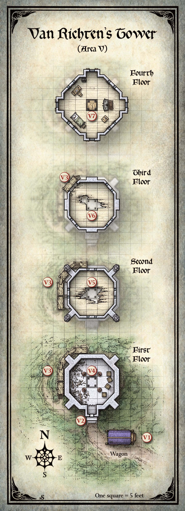

스트라드가 레이븐로프트 성(Castle Ravenloft)을 건설하기 위해 고용한 자 중 하나는 카잔(Khazan)이라는 대마법사였다. 성 건설이 완료된 후, 카잔은 바로비아(Barovia) 계곡으로 은퇴하여 바라톡 호수(Lake Baratok)의 작은 섬 위에 자신을 위한 탑을 지었다. 일부 기술자와 노동자의 도움으로 섬과 인근 해안을 잇는 흙과 자갈 둑길도 건설했다.
쇠락하는 시기에 카잔은 호박 사원(Amber Temple, 제13장)을 방문하여 리치(Lich)가 되는 비밀을 발견했다. 탑으로 돌아와 변환을 완수할 수 있었다. 몇 년 후, 스트라드가 뱀파이어가 된 뒤, 카잔은 바로비아의 통치권을 놓고 스트라드에게 도전하겠다는 생각으로 레이븐로프트 성을 방문했다. 그러나 카잔이 놀랍게도, 스트라드는 그를 마법 문제의 조언자로 섬기도록 설득했다. 스트라드에게 조언하지 않을 때, 리치는 대부분의 시간을 호박 사원에서 보내며, 스트라드 영지의 경계를 넘어 자신의 영혼을 마법적으로 투사하는 방법을 찾고자 반리치(Demilich)의 비밀을 터득하려 했다. 그의 노력은 실패했고, 카잔은 스스로를 파괴했다. 그의 유해는 레이븐로프트의 지하 묘소에 안치되어 있다.
카잔의 탑은 오랜 세월 비어 있었던 듯하며, 오래전 걸어 둔 마법 수호가 아니었다면 방치의 무게에 무너졌을 것이다. 최근, 전설적인 뱀파이어 사냥꾼 루돌프 반 리히텐(Rudolph van Richten)이 탑을 차지하고 바로비아 탐험의 거점으로 삼았다. 그는 이후 인근 발라키(Vallaki) 마을로 거처를 옮겼으며, 그곳에서 사람들 틈에 숨어 지내고 있다.
뱀파이어 사냥꾼의 발자취를 따르는 것은 그의 수제자 에즈메렐다 다브니르(Ezmerelda d'Avenir)로, 스승을 찾는 동안 탑에서 생활하고 있다. 그러나 캐릭터들이 도착할 때 그녀는 부재중이다.
반 리히텐이 돌아왔군, 늙은 바보가. 나에게서 숨으려 하지만, 찾아낼 것이다. 그와 나는 할 이야기가 많다.
— 스트라드 폰 자로비치(Strahd von Zarovich)
스발리치 숲(Svalich Woods)이 한때 탑으로 이어지던 도로를 삼켜버렸다. 이제는 넓은 흙 오솔길만 남아 있다.
안개 낀 숲과 바위 절벽에 둘러싸인 차가운 산 호수에 이른다. 짙은 안개가 어둡고 고요한 수면을 기어간다. 오솔길은 호수를 가로질러 100야드 뻗은, 풀로 덮인 둑길에서 끝나며, 평평하고 습한 섬 위에 석조 탑이 서 있다. 탑은 낡고 허물어져, 벽에 큰 균열이 갈린 한쪽에 무너져가는 비계가 달라붙어 있다. 이끼에 뒤덮인 날개와 옆구리를 가진 풍화된 그리핀 석상들이 벽을 받치는 부벽 꼭대기에 앉아 있다.
탑 기초 근처, 입구가 보이는 곳에 통 지붕의 마차가 진흙을 뒤집어쓴 채 세워져 있다.
탑은 80피트 높이이다. 네 개 층(각 20피트)과 대체로 온전한 슬레이트 기와 지붕이 있다. 2층, 3층, 4층에는 6인치 너비, 3피트 높이, 1피트 두께의 화살 구멍이 있다. 탑 최상층은 아래 층보다 돌출되어 있으며 화살 구멍에 더해 화분 상자가 있다.
부벽 위의 이끼 낀 그리핀은 단순한 장식 석상이다.
아래 구역들은 반 리히텐의 탑 지도의 표시에 해당한다.

에즈메렐다의 마차가 탑 앞에 세워져 있다. 캐릭터들이 마차를 조사하면, 다음을 읽어준다:
진흙 층 아래, 이 마차는 새로 칠한 보라색 페인트를 자랑하며, 바퀴에는 멋스러운 금장식이 있다. 각 모서리에 황동 등이 매달려 있고, 양쪽 묘비 모양 창문에 빨간 커튼이 쳐져 있다. 강철 자물쇠가 뒷문을 잠그고 있으며, 거기에 "들어오지 마시오!"라고 쓰인 싸구려 나무 표지판이 걸려 있다.
마법 탐지(Detect Magic) 주문으로 살피면 마차에서 소환(Conjuration) 마법의 오라가 감지된다. 식별(Identify) 주문을 마차에 시전하면 작동에 필요한 명령어를 알게 된다.
운전석에 앉아 명령어("드로바쉬(Drovash)")를 말하면 한 쌍의 유사 실체 짐마가 소환되어 마차에 마법적으로 매여 분리할 수 없다. 말과 마차의 속도는 30피트이며, 말은 운전자의 간단한 명령에 따른다. 운전자는 두 번째 명령어("아르베쉬(Arvesh)")로 말을 해산할 수 있다. 말은 해제(DC 15)할 수 있지만 해를 끼칠 수는 없다.
마차 바닥에 숨겨진 다락문이 있으며, 마차 아래로 기어들어간 캐릭터가 DC 13 지혜(지각) 판정에 성공하면 발견한다. 다락문은 마차 안으로 열리며, 안전하게 들어가는 유일한 방법이다.
문 안쪽 손잡이에 철사가 감겨 있고, 철사는 마차 천장에 매달린 연금술사의 불(Alchemist's Fire) 플라스크에 연결되어 있다. 문을 열면 플라스크가 떨어져 폭발하며, 마차 내벽을 따라 장식처럼 철사에 매달린 100개의 연금술사의 불 플라스크에 점화한다. 폭발 시 마차로부터 30피트 이내의 모든 크리처는 DC 12 건강 내성 굴림에 성공해야 하며, 실패 시 55(10d10) 화염 피해를, 성공 시 절반의 피해를 받는다. 마차 안이나 5피트 이내의 크리처는 내성 굴림에 불이익을 받는다. 폭발로 마차는 산산조각 나며, 내용물(아래 "보물" 참조)도 파괴된다.
마차 안의 캐릭터는 함정을 자동으로 발견하며(능력 판정 불필요), DC 10 민첩 판정에 성공하면 해제할 수 있다. 해제 시도 실패 시 함정이 발동한다.
마차 내부에는 다음 물품이 있다:
탑 문은 철로 만들어져 있으며, 손잡이나 경첩이 보이지 않는다. 문 한가운데에 크고 양각된 상징이 있다 — 여덟 개의 막대 인형이 둘러싼 연결된 선의 도형이다. 문 위 상인방에 카잔(Khazan)이라는 글자가 새겨져 있다.
플레이어들에게 문의 상징을 보여준다. 문은 마법적으로 잠겨 있고 함정이 걸려 있으며, 문의 상징이 함정 해제의 열쇠이다. 문을 여는 마법은 탑의 주문 흡수 효과(이 장 앞부분의 "카잔의 주문 흡수" 참조)에 의해 무효화된다.
함정을 해제하지 않고 문을 만지는 크리처는 탑을 감싸는 번개를 일으킨다. 탑 바깥에서 10피트 이내의 모든 크리처는 DC 15 민첩 내성 굴림에 성공해야 하며, 금속 갑옷 착용 시 불이익을 받고, 실패 시 22(4d10) 번개 피해를, 성공 시 절반을 받는다. 효과가 지속되는 동안, 번개에 턴 중 처음 들어가거나 턴을 시작하는 크리처는 22(4d10) 번개 피해를 받는다. 번개는 10분간 지속된다.
이 함정이 세 번째 발동하면, 마법이 실패하여 탑이 붕괴한다. 붕괴 시 탑 안의 모든 크리처는 132(24d10) 타격 피해를 받고, 탑으로부터 20피트 이내의 크리처는 DC 15 민첩 내성 굴림에 실패하면 44(8d10)의 낙하 잔해 피해를 받는다. 붕괴는 탑과 내용물 대부분을 파괴하며, 구역 V7의 움직이는 갑옷도 포함된다. 구역 V7의 나무 궤(및 그 안의 잘린 머리)는 온전하지만 잔해 속에서 찾으려면 1d8 + 2시간이 걸린다. 구역 V4의 점토 골렘은 손상되지 않지만 잔해 더미에 묻힌다. 캐릭터가 잔해를 뒤지는 매 시간마다 폭주한 점토 골렘을 우연히 파낼 확률이 10%이다.
문에 양각된 각 막대 인형은 팔 위치가 다르다 — 팔꿈치에서 위나 아래로 구부러지거나, 옆으로 곧게 뻗어 있다. 문에서 5피트 이내에 서 있는 크리처가 행동을 사용하여 여덟 막대 인형의 팔 위치를 올바른 순서로 따라 하면, 함정이 해제되고 문이 녹슨 경첩으로 10분간 열린다. 문 상징의 선이 올바른 순서를 드러낸다. 춤은 두 가지 방법으로 수행할 수 있다 — 한쪽 끝점에서 시작하여 선의 경로를 따라가야 한다. 여덟 세트의 팔 위치 모두 반복 없이 수행되어야 순서가 완성된다.
팔 위치를 순서대로 하지 않으면, 젊은 청룡(Young Blue Dragon)이 문에서 30피트 이내에 마법적으로 나타나 보이는 모든 크리처를 공격한다. 드래곤이 공격하는 동안에도 캐릭터들은 문을 열려 시도할 수 있다. 드래곤은 0 HP로 줄어들거나 캐릭터들이 문을 열면 사라진다.
문 너머에 5피트 정사각형 현관이 있으며, 너머 구역 V4를 가리는 너덜해진 커튼이 있다. 바깥으로 통하는 철문은 이쪽에서 안전하게 열 수 있다. 잡아두지 않으면 1분 후 마법적으로 닫힌다.
썩은 나무 대들보가 비계를 지탱하고 있으며, 아주 작은 바람에도 삐걱거리고 삐걱댄다. 사다리와 발판의 연속이 3층 북서쪽 벽의 구멍으로 이어진다.
비계는 200파운드 이상의 무게를 지탱하지 못한다. 붕괴 시 위에 선 사람은 20피트를 떨어지며, 10피트당 1d6 타격 피해에 더해 잔해로 인한 추가 2d6 관통 피해를 받는다. 비계 아래의 크리처는 DC 13 민첩 내성 굴림에 실패하면 14(4d6) 타격 피해를 받는다.
판석 바닥에 잔해가 흩어져 있고, 동쪽 벽 근처에 낡은 상자 몇 개가 서 있다. 남쪽의 찢어진 커튼이 탑 현관을 부분적으로 가린다.
바닥 중앙의 5피트 정사각형 오목한 부분에 네 개의 도르래가 있으며, 팽팽한 철 사슬이 썩은 나무 천장의 같은 크기 구멍을 통해 위로 뻗어 있다. 사슬 옆에 네 개의 키 큰 점토 석상이 서 있다.
네 석상은 점토 골렘(Clay Golem)으로, 공격받으면 자신을 방어한다. 그 외의 유일한 목적은 사슬을 당겨 엘리베이터를 작동시키는 것이다. 사슬은 보통 4층에 놓인 5피트 정사각형 나무 발판에 연결되어 있다.
크리처가 엘리베이터를 사용하려는 것처럼 보이면, 골렘이 발판을 내린 뒤 크리처가 지정하는 층으로 올린다. 위에서 내리는 명령에도 따른다. 엘리베이터의 올리고 내리는 것에 관한 명령만 따른다.
엘리베이터는 매끄러운 탈것이 아니다. 발판은 라운드당 5피트 오르거나 내리며, 움직임이 덜컹거린다. 점토 골렘이 하나라도 파괴되면, 나머지 골렘은 더 이상 엘리베이터를 작동할 수 없으며 공격받기 전까지 움직이지 않는다.
이 방의 상자들은 모두 비어 있다.
먼지와 거미줄이 이 비어 있는 방을 가득 채우고 있으며, 나무 바닥은 심하게 썩어 부분적으로 무너져 있다.
방 한가운데에 바닥과 천장에 5피트 정사각형 구멍이 있으며, 각 모서리에 녹슨 사슬이 있다. 사슬은 탑 엘리베이터 기구의 일부이다(구역 V4 참조). 중앙 통로를 둘러싼 5피트 정사각형 바닥 구간은 약하다. 각 구간은 150파운드를 지탱할 수 있으며, 그 이상이면 붕괴하여 위에 선 크리처가 1층까지 20피트를 떨어진다.
시간과 날씨가 이 방을 거의 파괴했다. 북서쪽 벽에 틈이 갈렸고 벽에는 끈적이는 검은 곰팡이가 피어 있다. 나무 바닥은 완전히 썩어 곳곳에서 떨어져 나가기 시작했다.
방 한가운데에 바닥과 천장에 5피트 정사각형 구멍이 있으며, 각 모서리에 녹슨 사슬이 있다. 사슬은 탑 엘리베이터 기구의 일부이다(구역 V4 참조). 중앙 통로를 둘러싼 5피트 정사각형 바닥 구간은 약하다. 각 구간은 50파운드를 지탱할 수 있으며, 그 이상이면 붕괴하여 위에 선 크리처가 1층까지 40피트를 떨어지며, 도중에 2층을 뚫고 지나간다.
아래 층들과 달리, 이 방에는 최근 거주한 흔적이 있다. 곰팡이 냄새가 나지만, 아늑한 침대, 어울리는 의자가 딸린 책상, 화려한 태피스트리, 장작이 넉넉한 큰 철 난로 등 생활의 안락함이 풍부하다. 화살 구멍과 깨진 셔터의 때 낀 창문으로 빛이 들어온다. 방의 다른 특징으로는 서 있는 갑옷과 나무 궤가 있다. 낡은 나무 서까래가 어떻게든 온전히 남은 탑 지붕의 무게에 휘어져 있다. 서까래에 도르래가 설치되어 있고, 여기에 탑의 엘리베이터 발판을 지탱하는 철 사슬이 걸려 있다.
반 리히텐은 이 방에서 수개월을 보내며 스트라드 폰 자로비치에 대한 평생의 연구 노트를 검토했다 — 암기한 뒤 난로에서 태운 노트였다. 일지도 태웠다. 에즈메렐다가 방을 수색하여 스승의 계획이나 행방에 대한 단서를 찾으려 했다. 그녀가 이곳에서 찾은 것 중에는 말린 바로비아 지도와 반 리히텐의 일지에서 탄 페이지가 있었으며, 이를 가져가 마차(구역 V1)에 숨겼다.
서 있는 갑옷은 움직이는 갑옷(Animated Armor)이다. 누군가 10피트 이내에서 명령어("카잔(Khazan)")를 말하기 전까지는 무력화 상태이며, 이후 활성화한 자의 명령을 따른다. 24시간 동안 새 지시를 받지 못하면 다시 무력화된다. 0 HP로 줄어들면 산산이 부서져 파괴된다.
나무 궤에서 라벤더 향이 난다. 잠금이나 함정이 없다. 안에는 얀(Yan)이라는 비스타니(Vistani) 인간의 잘린 머리가 있다. 살결은 밀랍 같은 안색이며 마법 기름으로 방부 처리되어 있다. 머리에 사자와의 대화(Speak with Dead) 주문을 시전하면(탑의 주문 흡수 효과 밖으로 가져가야 함), 얀은 도둑질로 일족에서 추방당했다고 밝힌다. 릭타비오(Rictavio)라는 하프엘프 음유시인이 카니발 마차에 태워주겠다고 했다. 둘은 며칠간 함께 여행했지만 관계는 긴장되었다. 릭타비오가 바로비아로 가는 길을 찾고 있음이 분명해지자, 얀은 마차와 릭타비오의 반려 원숭이를 훔치려 했지만, 릭타비오에게 당해 목구멍에 칼을 맞았다.
얀의 머리를 보존하는 마법 기름 덕분에 사자와의 대화 효과 중 나눈 대화를 기억할 수 있다. 릭타비오는 머리에 두 번 주문을 시전하여 바로비아의 비스타니에 대해 질문했다. 얀은 하프엘프가 비스타니에게 큰 해를 끼칠 계획이라고 믿으며, 자기 일족에게 경고해달라고 캐릭터들에게 간청한다. 자신의 몸이 어디 있는지는 모른다.
카드 점술이 이곳에 보물이 있다고 밝히면, 갑옷 뒤 벽 안의 좁은 구획에 숨겨져 있다. 갑옷이 활성화되어 보물을 꺼내라는 명령을 받으면, 벽의 돌을 빼내어 너머의 보물을 드러낸다.
캐릭터들이 탑을 붕괴시켰다면(구역 V2 참조), 잔해를 1d8 + 2시간 뒤져야 보물을 찾는다. 뒤지는 매 시간마다 붕괴를 견딘 점토 골렘(구역 V4 참조)을 우연히 파낼 확률이 10%이다. 골렘은 붕괴로 피해를 입지 않았으며, 폭주하여 파괴될 때까지 공격한다.
캐릭터들이 반 리히텐의 탑을 탐험하는 동안 다음 이벤트 중 하나 또는 모두를 사용할 수 있다.
캐릭터들이 에즈메렐다의 마차를 폭파하거나, 탑의 번개 외피를 작동시키거나, 탑을 붕괴시켰다면, 소란의 메아리가 서쪽으로 크레즈크(Krezk)까지, 동쪽으로 발라키(Vallaki)까지 계곡 전체에 울린다. 이 소란이 늑대인간(Werewolf) 무리의 주의를 끌며, 1시간 후 도착한다.
늑대인간은 반 리히텐의 탑 서쪽 스발리치 숲에 출몰한다. 늑대 형태로 달려와 둑길을 차단하여 먹잇감을 섬에 가두려 한다.
사냥을 이끄는 것은 HP 90의 늑대인간 키릴 스토야노비치(Kiril Stoyanovich)이다. 그와 함께 일반 늑대인간 6마리와 늑대 9마리가 있다. 늑대 형태일 때 늑대인간은 일반 늑대와 구별이 안 된다. 늑대 형태를 유지하거나 혼합 형태를 취한다.
캐릭터들이 "안개 속의 늑대인간" 모험 갈고리로 바로비아에 끌려왔다면, 이 조우는 캐릭터와 포가튼 렐름의 정착지를 공포에 떨게 한 늑대인간 무리 사이의 절정적 대결이 된다. 늑대인간은 탑에 마법 방어가 있음을 알기에 신중하다. 키릴은 최종 결전을 위해 캐릭터들을 밖으로 유인하려 하지만, 캐릭터들이 탑에서 주문이나 원거리 공격을 퍼붓기 시작하면 무리를 이끌고 숲으로 물러난다.
사로잡은 늑대인간은 무리가 납치한 아이들의 소재를 밝히도록 강요할 수 있다. 아이들은 서쪽 동굴에 갇혀 있다 (제15장, "늑대인간 소굴" 참조).
에즈메렐다 다브니르(Ezmerelda d'Avenir, 부록 D 참조)가 레이븐로프트 성에서 스트라드와 맞서고 간신히 목숨을 건진 뒤 반 리히텐의 탑으로 돌아온다. 발라키 외곽 비스타니 야영지(제5장, 구역 N9)에서 훔친 승마용 말을 타고 도착한다.
에즈메렐다는 마차의 무기고가 뱀파이어의 분노로부터 자신을 보호하기에 충분하길 바란다. 캐릭터들이 마차를 폭파했다면, 당연히 짜증을 내며 탑으로 후퇴한다. (그녀는 탑 문의 함정을 우회하는 방법을 안다.) 탑도 파괴되었다면, 캐릭터들이 분명히 자신의 최선의 생존 희망이 아닌 한 머물지 않는다.
스트라드와의 충돌로 에즈메렐다는 HP 30만 남았다. 캐릭터들이 제공하는 어떤 치유에든 감사히 받는다.
이 순간부터 스트라드는 새로운 목표를 얻는다: 에즈메렐다 다브니르를 죽이는 것. 비스타니 첩자가 자기 동족을 죽이는 데 갈등할 수 있음을 알기에, 스트라드는 스발리치 숲의 드루이드와 늑대인간, 그리고 바로비아 정착지에 숨긴 인간 첩자와 뱀파이어 스폰에 의존하여 에즈메렐다를 찾아 죽이려 한다. 스트라드가 그녀와 캐릭터들이 협력하고 있음을 알게 되면, 에즈메렐다가 동행할 것으로 기대하며 캐릭터들을 레이븐로프트로 초대한다. 초대장은 스트라드의 첩자 중 하나가 전달하는 편지 형태이다. 캐릭터들이 편지를 열어 읽으면, 플레이어들에게 부록 F의 "스트라드의 초대장" 유인물을 보여준다. 캐릭터들이 성으로 향하면, 도중에 위협적인 무작위 조우가 발생하지 않는다.
Curse of Strahd — Chapter 11: Van Richten's Tower
한국어 번역본